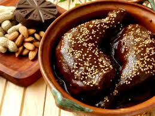

♥ Mole ♥

Mole Poblano :)
PLAGIARIZED:
El mole poblano con pollo es uno de los guisos mexicanos más soñados y utilizados para todo tipo de celebraciones.
¡Sigue leyendo!
Ingredientes
- 1 pollo entero cortado en piezas
- 225 gramos de chile mulato
- 200 gramos de chile ancho
- 115 gramos de chile pasilla
- 85 gramos de ajonjolí
- 85 gramos de cacahuate
- 1 pieza de bolillo duro
- 200 gramos de manteca
- 1 pastilla de chocolate
- 2 chiles chipotle
- 500 gramos de jitomate
- 250 gramos de cebolla
- 6 dientes de ajo
- 1 tortilla dura de maíz
- 1 cucharadita de anís
- 5 piezas de clavos de olor
- 8 piezas de pimientas gordas
- 1 rama de canela
- 4 litros de caldo de pollo
- 1 pizca de sal al gusto
- 85 gramos de almendras
- 1 puñado de pasas
Pasos
- Juntar los ingredientes necesarios
- El pollo lo lavamos
- A los chiles se les quita el rabito
- Freír ligeramente los chiles
- Tostamos el ajonjolí
- Freímos con manteca
- Agregamos la pimienta, la canela, el anís, y los clavos
- Asamos el jitomate
- Moler los chiles
- Agregamos el pan y la tortilla de maíz
- Movemos la salsa de mole poblano para evitar que se pegue en el fondo del cazo
- Cuando empieces a hervier agregamos el chocolate y la sal al gusto
- Servimos con pollo
⚠ ⚠ ⚠ It's all taken from This website. ⚠ ⚠ ⚠